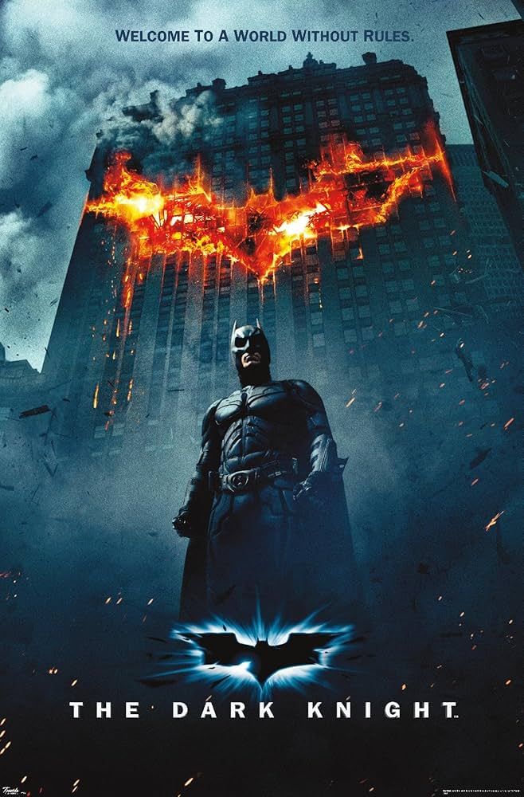
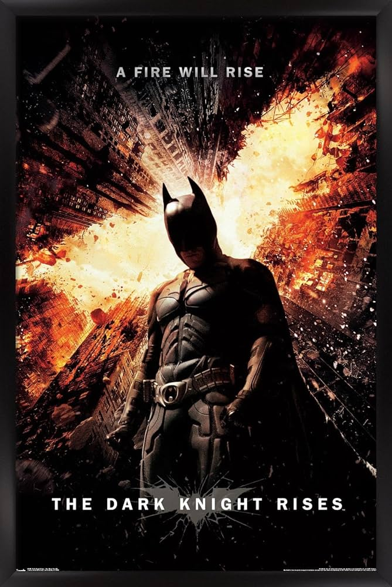

Dark knight Summary

Batman, Gordon, and Harvey Dent are actually making progress against crime, which is rare for that city, but then the Joker shows up and decides peace is boring. Instead of robbing banks for money like a normal criminal, he just wants to mess with people’s heads and prove everyone is one bad day away from losing it. He targets Gotham’s hope, especially Dent, and slowly breaks him down after things go really wrong in his life. Dent flips from hero to villain, Batman takes the blame for it to protect his image, and Joker kind of proves his point that chaos wins, at least a little.
- Company Credits: Warner Bros., Legendary Pictures, Syncopy
- Release Date: July 18, 2008
- Genres: Action, Crime, Drama
- Rating: PG-13
- Running Time: 152 minutes
Dark Knight Rises Summary

Bane shows up, takes over the city, exposes the truth about Dent, and turns Gotham into chaos. Batman tries to fight him, and loses, gets thrown into a prison, and has to rebuild himself physically and mentally. He comes back, beats Bane and saves Gotham from a nuclear bomb, and fakes his death so he can try to stop being Batman and live a normal life.
- Company Credits: Warner Bros., Legendary Pictures, Syncopy
- Release Date: July 20, 2012
- Genres: Action, Crime, Drama
- Rating: PG-13
- Running Time: 165 minutes